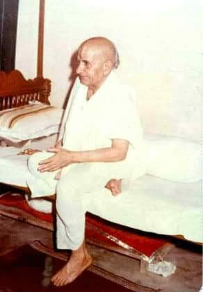
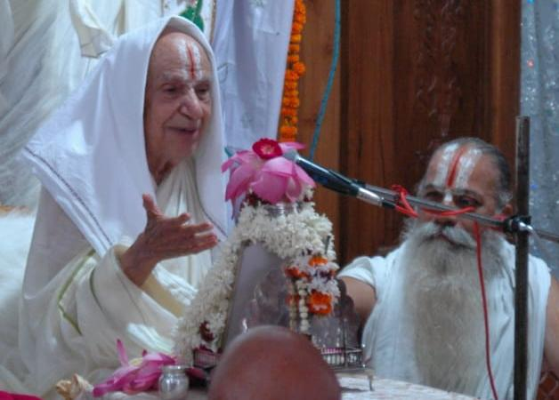
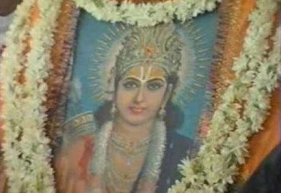
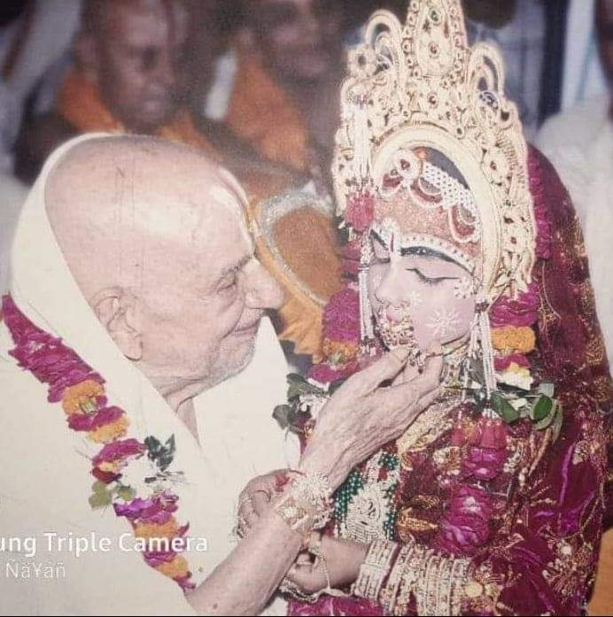
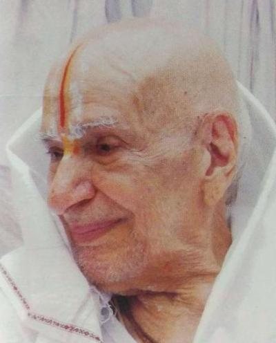
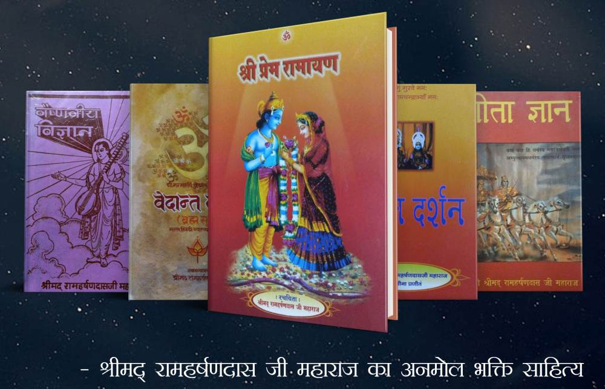
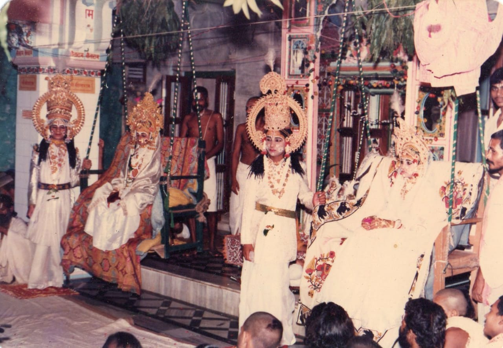

अनन्त श्री सम्पन्न प्रेमावतार पंचरसाचार्य करुणा वरुणालय श्री स्वामी राम हर्षण दास जी महाराज को भक्तवृंद उपरोक्त विशेषणों से समलंकृत करते हुए देखे सुने गए हैं यद्यपि मैं स्वयं स्वामी जी का ही कृपा पात्र हूँ। परंतु इन सभी विशेषणों की सार्थकता को नहीं जानता था, उसी तरह जैसे प्रतिदिन दर्शन करते हुए भी हम सूर्य भगवान क्या हैं इस रहस्य को नहीं समझ पाते।
एक दिन स्वामी जी के दर्शनार्थ भारतवर्ष के सर्वमान्य संत, साधु समाज के भूषण, तपोमूर्ति महान वीतरागी महापुरुष श्री स्वामी रामसुखदास जी महाराज आये। स्वामी जी ने उन संत की प्रतिष्ठा के अनुरूप आसन दिया और स्वागत करवाया। थोड़े समय तक सत्संग हुआ, पश्चात श्री रामसुखदास जी अपने आसन से उठे और स्वामी जी के चरणों में अपना सिर रख दिया यह कहते हुए कि जब तक आप अपना वरद हस्त मेरे सिर पर नहीं रख देंगे तब तक मैं सिर नहीं उठाऊंगा।
स्वामी जी जो अपने को तृणादपि सुनीच समझने वाले, संत के व्यवहार को देखकर अवाक रह गए। बहुत विनय की तब भी सिर नहीं उठाया तब स्वामी जी ने अपने प्रधान शिष्य महान्त श्री हरिदास जी से कहा “इत्र लाइये” और अपनी दोनों हथेलियों में इत्र लगाकर श्री रामसुखदास जी के सिर पर यह कहते हुए हाथ रख दिए कि मैं आपको आशीर्वाद देने लायक नहीं हूँ। आपकी सेवा कर रहा हूँ सिर की चम्पी (मालिश) किये दे रहा हूँ।
मैं उस समय वहां था। उपरोक्त घटना को देखकर अब समझा कि स्वामी जी मेरे गुरुदेव भगवान के संबंध में कहे जाने वाले सभी विशेषण सत्य हैं। क्योंकि संत की महिमा को, उनके स्तर के कोई संत ही समझ सकते हैं, सामान्य व्यक्ति नहीं। कहावत भी है, “खग जाने खग ही की भाषा”।
श्री स्वामी जी के संबंध में परमार्थ पथ के पथिक सभी ग्रहस्थ, विरक्त महानुभावों की अत्यंत उत्कृष्ट गरिमामयी मान्यता रही है। अनुभवी भक्तों ने यह तथ्य पूर्णतया सप्रमाण स्वीकार किया है कि श्री स्वामी जी श्री जानकी जी के अग्रज, श्री जनक सुनैना जी के दुलारे लाल श्री प्रेम मूर्ति लक्ष्मीनिधि जी के अवतार थे जो जगत के कलिमल ग्रस्त जीवो को मिथिला रस का रसास्वादन कराकर भव पार करने के लिये साथ ही अपने बहनोई श्री राम जी को हर्ष प्रदान करने के लिये श्री राम हर्षण दास जी के रूप में अवतरित हुए थे।
श्री सीता जी के अग्रज स्वामी जी कितने उदार और कितने समर्थ थे कि पोड़ीं की श्री सीताराम विवाहोत्सव समैया में घोषणा कर दी कि जो भी जन प्रभु के इस महोत्सव में आए हुए हैं उन्हें निश्चय ही प्रभु श्री सीताराम जी के दिव्य साकेत धाम की प्राप्ति होगी। एक बार भगवत भक्तों के बीच परम समर्थ श्री स्वामी जी ने यह भी कहा था कि जो भी जन मुझ दास के माध्यम से प्रभु श्री सीताराम जी से जुड़े हैं ऐसे शिष्य और उन शिष्यों के शिष्यों को अब इस मायिक जगत में लौट कर नहीं आना है। उपरोक्त कथन के अनुसार श्री स्वामी जी के शिष्य, प्रशिष्य अपनी दिव्य वैष्णवीय परंपरा को समृद्ध और विवर्धित करते हुए स्वयं तो पार होंगे ही असंख्य भव ग्रस्त जीवो को पार लगाएंगे।
श्री स्वामी जी महाराज इस जगत में जब तक रहे जल में कमल की तरह रहे। उनके भगवत् प्रेम मय विशुद्ध अंतःकरण में काम, क्रोध, लोभ जैसे प्रबल विकारों का स्पर्श भी नहीं हुआ। सामान्य व्यक्ति अपने कलुषित मन से उन्हें ना समझ पाये यह बात और है।
स्वामी जी एक बार रीवा में अत्यंत समर्पित परिवार श्री प्रकाश नारायण जी के गृह में निवास कर रहे थे। प्रकाश नारायण जी की रूपवती युवा पत्नी तथा मन्नी जी आदि चार पुत्रियां जो जन्म से ही अपने गुरुदेव श्री स्वामी जी की पवित्र कृपा भरी दृष्टि से पलीं थीं, श्री स्वामी जी की सेवा में सब समय लगी रहतीं थीं। श्री स्वामी जी संपूर्ण नारी जगत में अपनी अनुजा श्री सिया जी का दर्शन करने वाली सुदृढ़ स्थिति में स्थित रहते थे।
स्वामी जी ने मायाग्रस्त असंख्य जीवों को परम दुर्लभ श्री राम मंत्र प्रदान कर भवसागर से पार किया और भविष्य के लिये एक सुदृढ़ शिष्य परंपरा प्रदान की।
गुरुदेव भगवान के पूर्णतया निर्देशन पर हुए प्रेम यज्ञ के संबंध में प्रत्यक्ष दर्शी भक्त कहा करते थे कि प्रेम यज्ञ जो हो गया तो हो गया अब पुनः संभव नहीं।
श्री खजुहा आश्रम स्वामी जी की भजन स्थली है। एक बार स्वामी जी इसी आश्रम में जन संपर्क से सर्वथा दूर, एकांत कक्ष में प्रभु के विरह अवस्था में अहर्निश डूबे, रोते, चीखते चिल्लाते हुए २७ दिन बिता दिए। शिष्यों को आशंका हुई कि कहीं जीवन लीला समाप्त ही ना कर दें। तब श्री सीताराम जी के स्वरूपों द्वारा उस भयावनी स्थिति से अलग करवाया गया।
श्री स्वामी जी ने अपनी युवावस्था में अनुष्ठान पूर्वक नेत्रों से अश्रु बहाते भाव विभोर अवस्था में १३ करोड़ श्री राम मंत्र का जाप किया। जिसका दशमांश हवन श्री राम मंत्र महायज्ञ के रूप में सन् १९९७ में श्री राम हर्षण कुंज श्री अयोध्या धाम में संपन्न हुआ। अनुराग पूर्वक मंत्र जाप का परिणाम यह हुआ कि भक्तों ने अनेक बार श्री स्वामी जी के सर्वांग में श्री षडाक्षर राम मंत्र का और श्री सीताराम नाम का दर्शन किया।
श्री स्वामी जी की श्री राम मंत्र में अतीव निष्ठा थी। वे मंत्र स्वरूप ही थे। मंत्र जप करने का जो प्रतिदिन का समय और नियम था उसमें कैसी भी परिस्थिति आने पर किसी प्रकार का कोई समझौता संभव नहीं था। श्री मार्कंडेय आश्रम की घटना है, श्री स्वामी जी प्रातःकाल नियम में बैठ गए। रीवा नरेश महाराज श्री मार्तंड सिंह जू देव दर्शनार्थ आए। लोगों ने खिड़की से स्वामी जी को सूचना भी दी पर भजन के समय में कोई हेर फेर नहीं। राजा साहब के पास इतना समय नहीं था अतः वे चले गए। स्वामी जी अपना नियम पूरा होने पर ही कुटिया से बाहर निकले।
एक बार श्री राम हर्षण कुंज अवधधाम में निवास करते हुए स्वामी जी अत्यंत भाव विभोर अवस्था में श्री राम मंत्र का जाप कर रहे थे। जप करते समय ध्यान में एक अनुपम दिव्य प्रकाशमय मंदिर का दर्शन हुआ। उस मंदिर में दिव्य सिंहासन पर परम प्रकाशमय षडाक्षर श्री राम मंत्र भगवान विराजे हैं। यह दर्शन कब तक चला यह तो प्रभु ही जानें। जप पूर्ण होने पर अंतरंग शिष्यों को दर्शन वाली घटना का उल्लेख भी किया और निर्देश भी कि श्री मंत्रराज भगवान का मंदिर बनना चाहिए ऐसी प्रभु की प्रेरणा है। महांत श्री हरिदास जी तथा सभी श्रद्धालुओं ने तन, मन और धन लगाकर श्री राम मंत्रार्थ मंडपम् का निर्माण करवाया।
ये मंत्रराज भगवान स्वामी जी के हृदय बिहारी भगवान हैं। श्री राम मंत्र का जाप करने वाले को परम पद की प्राप्ति होती है इसलिए इस मंत्र को तारक मंत्र भी कहते हैं। जगत में अधिकांश ऐसे भी जन हैं जिन्हें श्री राम मंत्र प्राप्त करने का सौभाग्य नहीं मिला। यदि वे स्वामी जी के हृदय बिहारी इन श्री राम मंत्र का दर्शन भी कर लेंगे तो उनका भगवद्धाम जाने का मार्ग प्रशस्त हो जाएगा। ऐसी मंत्र भगवान के मंदिर की भव्य भावना है।
श्री स्वामी जी ने वैष्णव जगत के लिये परम उपयोगी प्रभु प्रेम संयुक्त भक्ति साहित्य का सृजन किया। जिस मैथिल रस पर भक्तों की कलम कम ही चली थी, श्री स्वामी जी ने प्रचुर मिथिला भावापन्न साहित्य का सृजन किया है।
श्री प्रेम रामायण, लीला सुधा सिंधु, प्रस्थान त्रयी (गीता, उपनिषद, ब्रह्मसूत्र) पर भाष्य, वैष्णवीय विज्ञान, प्रपत्ति दर्शन, विनय वल्लरी, प्रेम वल्लरी, विरह वल्लरी प्रभृति दुर्लभ ३३ ग्रंथों द्वारा भक्ति साहित्य का सृजन कर स्वामी जी ने भक्ति जगत का महान उपकार किया है।
श्री स्वामी जी ने अपने शिष्यों के द्वारा संतलीला और राम लीला का मंचन करवाकर भक्त और भगवान को लीला सुख प्रदान किया जो अद्यावधि चल रही है।
श्री स्वामी जी ९४ वर्ष ७ माह २९ दिन तक इस धरा पर रहे। उस काल में उनके दिव्य भगवत् प्रेम प्रपूरित गौर वपु का दर्शन करके, उनकी प्रभु प्रेम मिश्रित परम मधुर अमृतमयी वाणी श्रवण करके कितने जीव परम पद के पथिक बने साथ ही विशुद्ध सीताराम प्रेममयी मिथिला रस संश्लिष्ट वृहद साहित्य सरिता में अवगाहन करके असंख्य जन भव सिंधु से पार हो गए और भविष्य में होते रहेंगे।
अंत में गौर विग्रह, परम सुंदर, परमाचार्य हमारे श्री सदगुरुदेव भगवान के पावन चरण कमल में कोटि कोटि वंदन करते हुए विशुद्ध प्रेम प्रार्थी -
- सीताराम वल्लभ दास (स्वामी शरण)
इस लघु कलेवर लेख में स्वामी जी महाराज की महिमा का संकेत मात्र किया गया है। जिज्ञासु जन अगर विस्तृत रूप में पढ़ना चाहें तो निम्नलिखित ग्रंथों का अवलोकन करें।
चतुर्धाम यात्रा वृत्त
श्री राम हर्षण लीला पीयूष
श्री राम हर्षण रामायण
श्री सद्गुरु गौरव गाथा